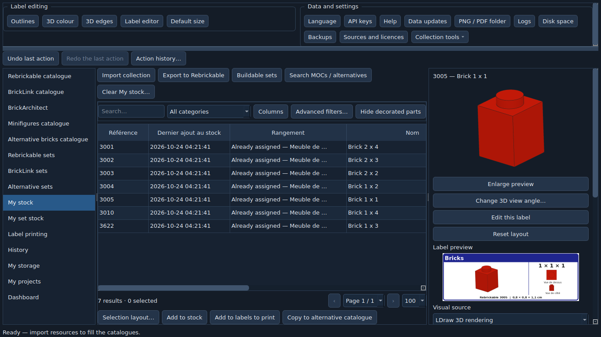
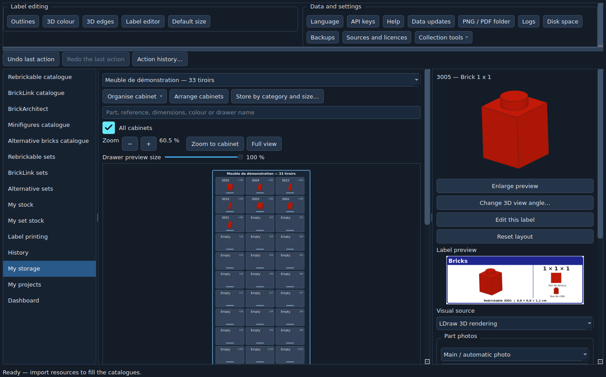
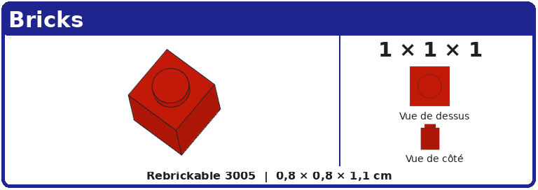
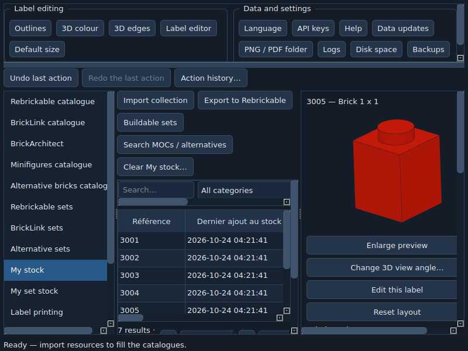

BrickLabo — Quick start
From the catalogue to your drawers and building projects. This guide uses a disposable demonstration collection; personal data stays in Donnees.
Version 0.1.73 · Français · Full help · All release notes and validation
1. Install and load catalogues
- Download the release’s Complet ZIP, extract everything into a writable folder and run
BrickLabo.exe. GitHub’s automatic “Source code” archives are not installable. - Allow the first import to finish. Catalogues describe existing references; importing catalogue data does not declare ownership.
- Use Data updates to import Rebrickable CSV/ZIP, BrickLink TXT or LDraw resources. Official LDraw updates retain the active archive if validation fails.
- Batch inventory loading continues with its progress window closed while BrickLabo remains open. Click Inventories: processed/total in the status bar to follow, pause or resume. Quitting preserves the remaining queue.
Local searches use loaded inventories. Optional online completion may require API credentials; see full help. Missing or partial inventories limit the results.
2. Understand ownership
| Screen | What it counts | Example |
|---|---|---|
| My stock | Loose parts and minifigures by reference and colour. | 40 red 3005 bricks. |
| My set stock | Owned sets with separately tracked components. | An owned 30363-1 available to dismantle. |
| Set catalogue | Reference inventories without ownership. | A set you are considering. |
Right-click a set to add the owned set or its inventory to loose stock. When importing a collection, check its source, destination and quantities. Invalid rows stay in the correction assistant for later resumption. Entry dates and import batches help identify mistaken additions. Undo and action history cover supported operations.

3. Create cabinets and locate parts
- Open My storage → Organize cabinet, create a cabinet and choose rows and columns. Duplicate its format for further cabinets.
- Choose grid alignment and four cabinets per row for eight cabinets in two rows. The collection can grow beyond the initial number of cabinets.
- In parts to store, choose loose stock or a catalogue, filter and drag the selection onto a drawer. Catalogue links prepare locations without adding owned quantities.
- Automatic category/stud-size storage prepares a draft. Select category, shape/family, size, reference and optional colour criteria. Choose one or all cabinets, category order and the number of drawers per reference directly in the table.
- Adjust the preview by dragging to move/swap or right-clicking to add a reference. Only applying the proposed layout saves it.
Hover a drawer for its contents; double-click to edit its inventory. To split 40 pieces across two drawers, enter counted quantities of 20 and 20. Located quantities do not add to ownership. The storage column identifies existing drawers, including references sharing one label when each reference is recorded in the drawer contents.

4. Find builds and manage projects
In buildable sets, choose usable stock: loose pieces, selected owned sets to dismantle, or both. Set components can contribute without moving them to loose stock first. Choose coverage threshold, optional ignored colours and minifigure exclusion. Results are independent alternatives; the same units cannot build all results simultaneously.
Send a result to My projects. Projects retain colour mode. The owned-set option adds their components; assigning owned set copies makes their contribution exclusive to a project. Loose reservations block other projects without reducing ownership. Pick lists record actual drawer withdrawals and show already picked parts.
For unexpected missing pieces, check loaded inventories, colours, minifigures, reservations and assigned set copies. Uncertain reference mappings are never silently equated.
5. Print 65 × 23 mm labels
Set default width to 65 mm and height to 23 mm. The label editor offers a main-only view, main plus bottom, or a composition of additional views. Save custom layouts, apply them to a category, or adjust a multiple selection together.
Add rows to label printing, choose the PNG/PDF output folder and generate the required format. Edge settings affect large previews and labels; table thumbnails retain thin edges.

Print a test at 100% / actual size, disable automatic fitting and measure 65 × 23 mm with a ruler. For cabinets, use A4 printing with one page per cabinet or an overview, portrait or landscape. A generated PDF does not establish successful physical printing.
6. Use smaller screens
Drag the horizontal divider below the top controls to give tables more height. Scroll control groups and panels when needed; drag vertical dividers to redistribute width. Commands beyond the visible width remain reachable with scrollbars.

7. Back up, restore and update
- Use Backups → Back up now. Store the private ZIP outside
Donnees, preferably on another device. Configure automatic backups and pre-operation restore points in the same menu. - Full backups may include API credentials. Keep them private. Selective exports let you choose families and exclude credentials by default.
- Test restoration in a separate copy of the application. A full restore applies at restart and preserves the previous data folder indicated in its report.
- Use Data updates → Check for a software update. Stable public releases are checked, including the complete ZIP’s SHA-256. Keep a backup and close other instances before installing and restarting.
For manual installation, extract into a new folder and copy Donnees only after closing the old application. Keep the old installation until verified. Downgrades may need a compatible data backup.
8. View your collection from a phone
Connect both devices to the same local Wi-Fi network. Start phone access in collection tools, open one of the displayed local addresses on the phone and enter its access code. Keep the PC and BrickLabo running. Access is read-only for quantities, drawers and locations. Stopping access invalidates sessions. No cloud account or QR code is required. Cabinet A4 sheets can optionally include the address as text, without the access code.
9. Report an issue
Include exact application version, Windows version, action, reference, expected quantity and observed quantity. Use screenshots without private information and relevant log excerpts. For crashes, mention any rendering, importing or window closure in progress. Automated checks, native Windows trials, physical printing and external permissions are tracked separately in final qualification.